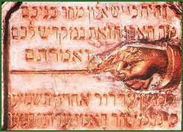

|  | ||
| In March 1838, the great flood of Pest-Buda destroyed over half the houses in the Jewish quarter. The Jews in Óbuda fled to the synagogue where later they placed a board showing the height of the flood: “Let this be a sign among you, that when your children ask in time to come, saying: What mean ye by these stones (Joshua 4:6). Let the very last generation know that the waters of the Danube swelled up to this point.” | ||